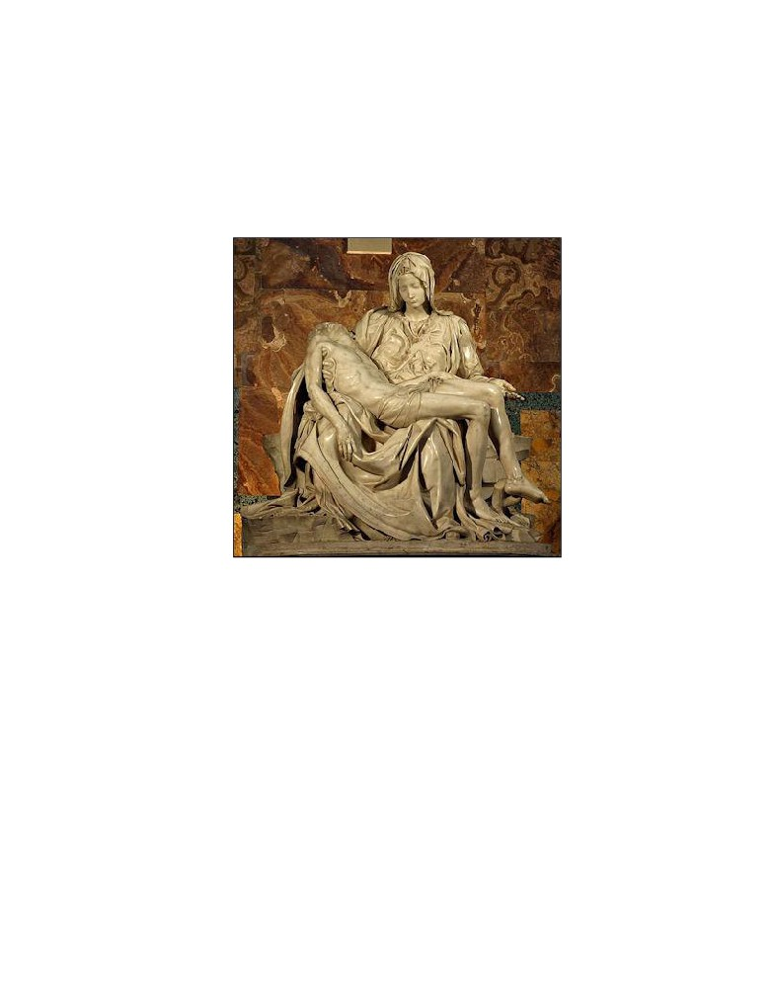

Darkness from noon to 3:00 pm, reminiscent of the darkness over Egypt before the first Passover, was most probably added for dramatic effect, as were the sheeted dead emerging from their tombs. Based on his “Eli…” citation, Jesus apparently learned the Psalms in Aramaic. Elias (Elijah) was a prophet who did not die, but was taken up into Heaven by a chariot of fire, and would come to the aid of the distressed. Josephus has an account of an earthquake before the fall of Jerusalem in 70. Mt: John; Mk 14-15, John 18-19, died on different days. Note also that none of his followers was present, but only some women “beholding afar off.”

Mt 27:45 Now from the sixth hour there was darkness over all the land unto the ninth hour. 27:46 And about the ninth hour Jesus cried with a loud voice, saying,
Eli, Eli, lama sabachthani? Ps 22:1
that is to say, My God, my God, why hast thou forsaken me? 27:47 Some of them that stood there, when they heard that, said, This man calleth for Elias. 27:48 And straightway one of them ran, and took a spunge, and filled it with vinegar, and put it on a reed, and gave him to drink. 27:49 The rest said, Let be, let us see whether Elias will come to save him. 27:50 Jesus, when he had cried again with a loud voice, yielded up the ghost. 27:51 And, behold, the veil of the temple was rent in twain from the top to the bottom; and the earth did quake, and the rocks rent; 27:52 And the graves were opened; and many bodies of the saints which slept arose, 27:53 And came out of the graves after his resurrection, and went into the holy city, and appeared unto many. 27:54 Now when the centurion, and they that were with him, watching Jesus, saw the earthquake, and those things that were done, they feared greatly, saying, Truly this was the Son of God. 27:55 And many women were there beholding afar off, which followed Jesus from Galilee, ministering unto him: 27:56 Among which was Mary Magdalene, and Mary the mother of James and Joses, and the mother of Zebedees children.
~~~~~~~